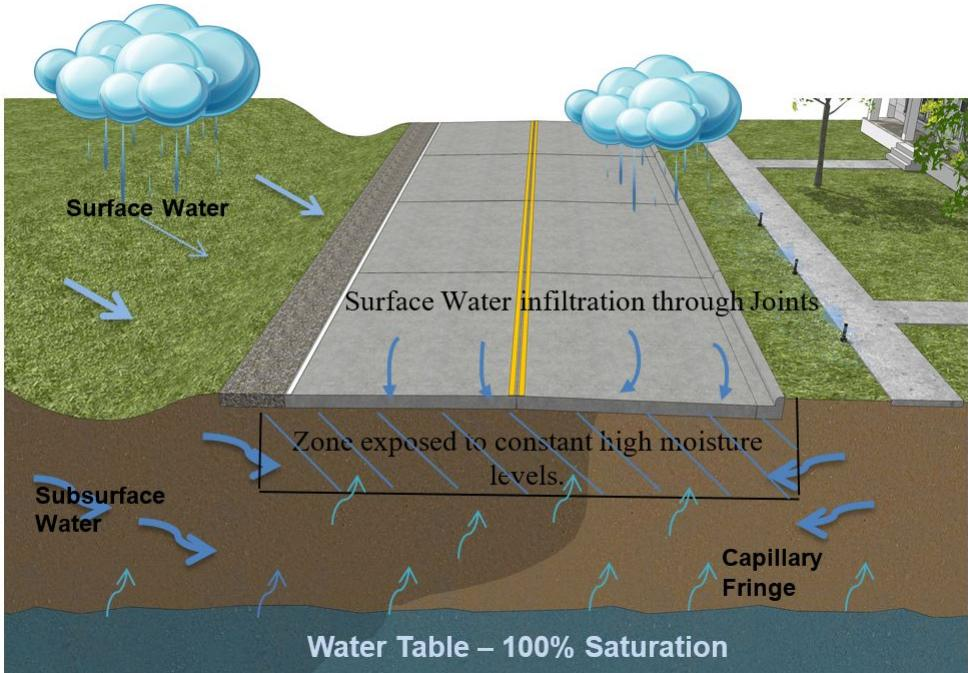
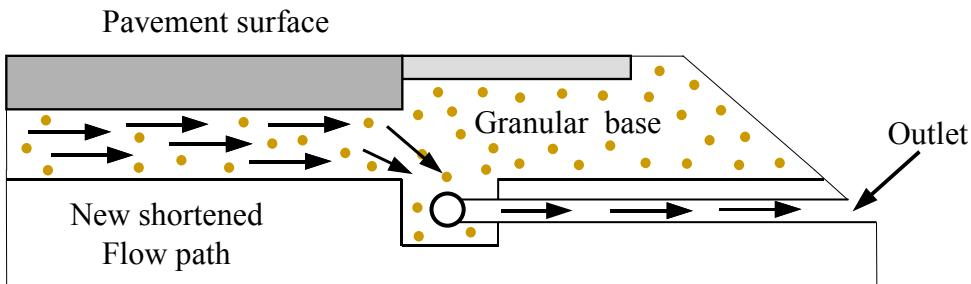
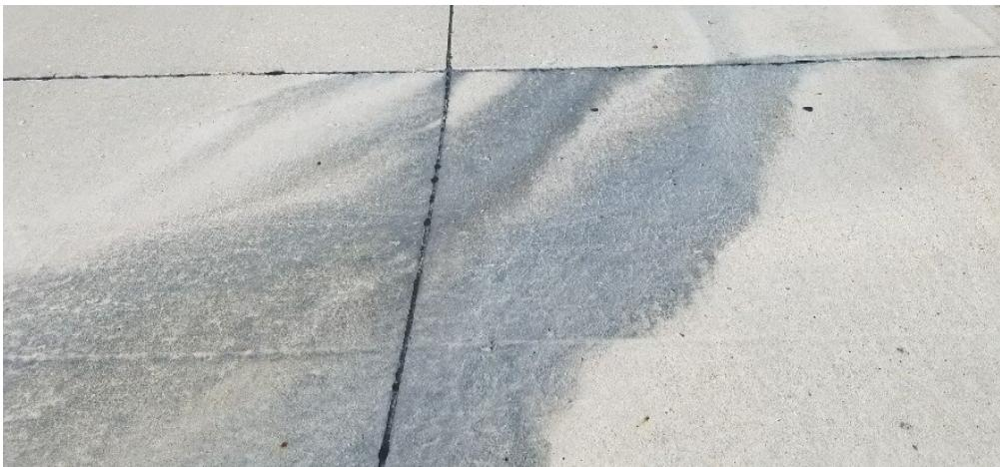
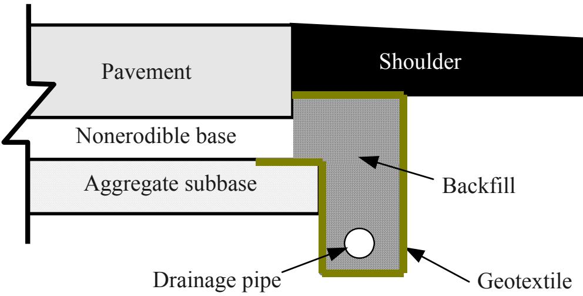
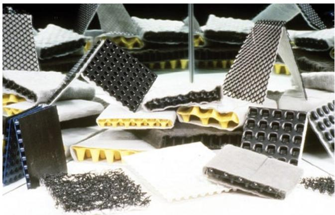
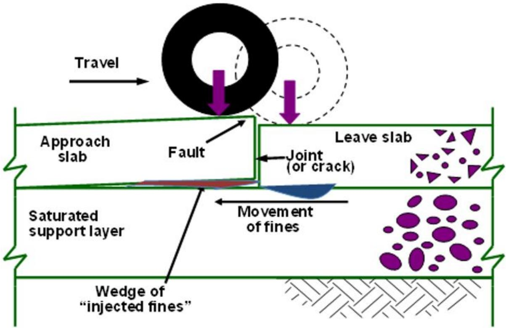
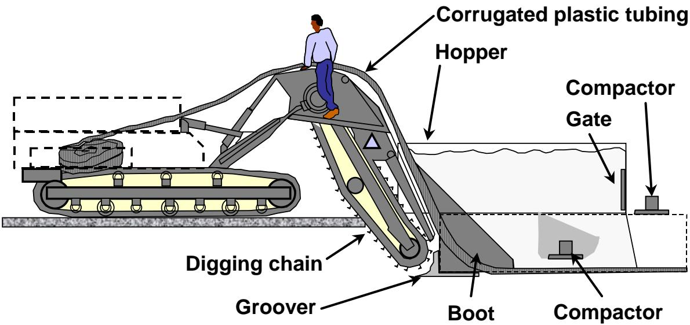
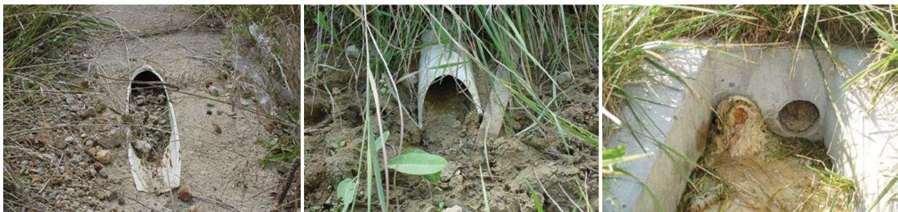
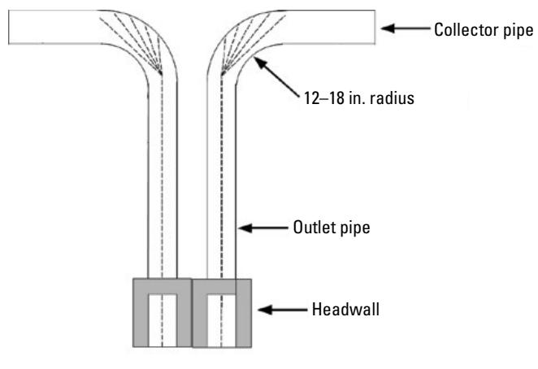

Edge Drain Retrofitting for Pavement Drainage
Edge‑drain retrofitting is a preservation technique for aging concrete pavements that mitigates moisture‑related distress by creating a dedicated pathway for water infiltrating through lane‑shoulder joints and the slab‑base interface to escape from the subgrade [1][2][3]. The method installs prefabricated geocomposite, aggregate or pipe‑type drains directly against the base layer along the pavement edge, thereby restoring support beneath the slab, reducing fine‑particle pumping and faulting, and extending service life when applied to relatively young pavements (under 15 years), with coarse, non‑erodible bases (≤15 % passing a #200 sieve) and limited cracking (≤5 %) [1][2][3]. Its long‑term effectiveness hinges on correct placement, avoidance of clogging or pipe crushing, and an ongoing maintenance program that monitors outlets and clears debris to keep water flow unobstructed [1][2][3].
Sources (3)
Purpose and treatment objectives
Edge‑drain retrofitting is intended to remediate moisture‑related distress in aging concrete pavements, targeting the saturation of the base/subgrade that causes fine‑particle pumping, slab faulting, and deterioration of joint areas (including D‑cracked joints). The underlying problem stems from surface water infiltration combined with inadequate original drainage design, damaged or missing subsurface drains, and insufficient maintenance, which allow water to accumulate at lane‑shoulder joints and the slab‑base interface. [1][2][3]
The figure below illustrates a concrete pavement exposed to these critical surface and subsurface moisture conditions.

Concrete pavement exposed to surface and subsurface moisture conditions [1]The figure illustrates a concrete pavement section subjected to rainfall, showing arrows indicating surface water infiltration through lane joints. It depicts the resulting “Zone exposed to constant high moisture levels” within the subgrade and base layers, highlighting how subsurface water and capillary fringe contribute to saturation beneath the slab.
[1] — Ch. 4 (p. 254); [2] — Ch. 7 (pp. 182–183); [3] — Ch. 7 (pp. 142–156)
The objective of edge‑drain retrofitting is to improve pavement drainage so that the pavement’s service life is lengthened by preventing further moisture‑related deterioration. By providing a pathway for subgrade water to escape, edge drains increase support beneath the concrete slab, reducing faulting and other moisture‑induced distress, thereby slowing the progression of damage and preserving existing functionality. [1][2][3]
The figure below illustrates how a longitudinal drain is installed to shorten the water flow path and enhance this drainage efficiency.

Longitudinal drain added to shorten flow path. [3]The figure illustrates a longitudinal edge drain installed at the interface between the pavement surface and the granular base, providing a dedicated pathway for water to escape through an outlet.
[1] — Ch. 4 (p. 254); [2] — Ch. 7 (pp. 182–183); [3] — Ch. 7 (pp. 142–156)
Distress characterization and causes
The distress addressed by edge‑drain retrofitting is moisture‑related damage that develops on older concrete pavements where surface water infiltrates the structure, often affecting the pavement edges. It typically occurs on pavements less than fifteen years old with non‑erodible bases and in generally good condition—i.e., without severe moisture damage and with fewer than five percent of slabs cracked—so the extent is limited but sufficient to impair performance. The severity can vary from early signs of deterioration to more noticeable cracking, and because infiltration continues, the distress can progress over time, potentially compromising safety and operational service if not corrected. [3]
[3] — Ch. 7 (pp. 155–156)
Moisture infiltrating the base and subgrade can saturate the pavement structure, causing fine particles to be pumped upward and initiating faulting that reduces support for the concrete slab. The primary source of the water affecting pavement performance is surface infiltration, which enters through lane‑shoulder joints and slab‑base interface voids, driving pumping, joint deterioration, and faulting. Inadequate initial drainage design, damage to existing subsurface drainage systems, or poor maintenance allow this moisture to accumulate, while many failures of pavements with subsurface drainage can be attributed to poor design and construction practices. Common causes for poor performance of retrofitted pipe edge drains were discovered to be improper installation, pipe clogging due to fines, and pipe crushing, which further impede water removal and accelerate cracking and loss of structural capacity. [1][2][3]
The following figure illustrates the resulting damage caused by this moisture accumulation.

Evidence of pumping at a transverse joint caused by saturated subgrade. [1]The image displays a concrete pavement surface where fine material has been ejected from the transverse joint, creating a dark, wet-looking stain on the slab. This visual evidence of pumping occurs when moisture within the pavement system saturates the subgrade or base, causing fine particles to be pumped upward through joints under traffic loads.
[1] — Ch. 4 (p. 254); [2] — Ch. 7 (pp. 182–183); [3] — Ch. 7 (pp. 142–156)
Applicability and treatment selection
Edge drain retrofitting is suitable when surface infiltration is the dominant source of water entering the pavement, the concrete slab is relatively new—less than 15 years old—and the existing pavement is in generally good condition, typically showing fewer than five percent cracked slabs and no severe moisture distress. The underlying base must be coarse or non‑erodible, indicated by less than 15 % of the material passing a #200 sieve (0.075 mm). When these age, condition, and subgrade criteria are met and proper installation and maintenance can be assured, an edge drain can effectively remove water entering at lane‑shoulder joints. [2][3]
The following figure illustrates a recommended design for these retrofitted pipe edge drains.

Cross-section of a retrofitted pavement edge drain system. [3]The figure displays the cross-sectional layout of a pipe edge drain installed along the shoulder side of a roadway structure. It shows a drainage pipe embedded within an aggregate-filled trench that is lined with geotextile fabric to separate it from the surrounding soil and pavement layers.
[2] — Ch. 7 (pp. 182–183); [3] — Ch. 7 (pp. 155–156)
“The primary source of the water affecting pavement performance is surface infiltration.” When moisture enters the slab primarily from other sources—such as groundwater seepage or lateral flow—edge‑drain retrofits provide little benefit. The technique also loses value when “by the time retrofitted edge drains are typically added much of the damage is already done, and the improved drainage may be of questionable value.” In such cases a more aggressive rehabilitation (e.g., slab replacement, crack sealing, or full‑depth reclamation) should be considered. Installation reliability is another critical limiter: “The failure to place the geocomposite edge drain against the base layer was cited as the primary cause of failure, resulting in soil retention and clogging,” and “common causes for poor performance of retrofitted pipe edge drains were discovered to be improper installation, pipe clogging due to fines, and pipe crushing.” If proper placement cannot be guaranteed or routine maintenance (outlet clearing, flushing) cannot be performed, the retrofit is likely to fail. Additional red flags include pavements that are older than roughly fifteen years, have a fine base material (more than about 15 % passing a #200 sieve), exhibit extensive cracking (>10 % of slabs cracked) or other severe moisture‑damage, and situations where the existing drainage system already performs adequately. Under any of these conditions, an alternative preservation, rehabilitation, or repair strategy—such as slab resurfacing, crack repair, base stabilization, or full reconstruction—should be selected. [2][3]
[2] — Ch. 7 (pp. 182–183); [3] — Ch. 7 (pp. 142–156)
Condition assessment and timing
To determine whether edge‑drain retrofitting is required, agencies first perform a visual condition survey of the pavement surface and slab‑base interfaces, looking for signs of pumping, faulting, joint deterioration, and water infiltration at lane‑shoulder joints. Video inspections of any existing edge drains are then conducted to verify that the pipes are correctly placed and free of clogging or crushing. Moisture conditions should be investigated in the base/subgrade that may have accelerated the pumping of fines which initiated the pavement faulting; measurements of subgrade water content and observations of standing water after normal drainage actions help confirm persistent saturation. If the pavement and substructure continues to remain saturated, additional corrective action will be needed. Quantify cracking to ensure that cracked slabs are below the threshold (generally less than about five percent). Verify from records that the structure is relatively new—under fifteen years old—and perform a gradation test on a base material sample to confirm that no more than fifteen percent passes the #200 sieve (0.075 mm). Finally, it is extremely important that drainage outlets are monitored and debris is cleaned out to allow free water flow out of the pavement substructure. The primary source of the water affecting pavement performance is surface infiltration, so confirming that surface‑infiltration water dominates guides the decision to retrofit edge drains at the identified locations. [1][2][3]
[1] — Ch. 4 (p. 254); [2] — Ch. 7 (pp. 182–183); [3] — Ch. 7 (pp. 142–156)
Edge drain retrofitting should be applied when moisture‑related distress is still limited and the pavement is early in its service life. It is indicated when investigations reveal that the base or subgrade remains saturated despite prior measures, signaling ongoing water accumulation: “If the pavement and substructure continues to remain saturated, additional corrective action will be needed.” The dominant source of that moisture must be surface‑water infiltration: “The primary source of water affecting pavement performance is surface infiltration.” The treatment is most effective on relatively young pavements—generally less than fifteen years old: “The pavement is less than 15 years old,” and when the underlying base contains only a modest amount of fine material, i.e., less than fifteen percent passing the #200 sieve: “The base material has less than 15% of its material passing the #200 sieve.” Under these conditions edge drains provide an efficient path for water to escape, helping to prevent further pumping, faulting, and progressive deterioration. [1][2][3]
The following figure illustrates the effectiveness of this retrofitting by showing a before-and-after comparison of pavement conditions with and without a longitudinal edge drain.
 Schematic of a longitudinal edge drain retrofitting system installed beneath the pavement slab to intercept and redirect water flow from the granular base. [2]
Schematic of a longitudinal edge drain retrofitting system installed beneath the pavement slab to intercept and redirect water flow from the granular base. [2]
The figure illustrates a cross-section of a pavement structure where a new shortened flow path is created by installing an edge drain at the interface between the concrete slab and the granular base. Arrows indicate that water infiltrating through the joint bypasses the original, longer travel path within the base material and is instead captured by the drain to be discharged via an outlet.
[1] — Ch. 4 (p. 254); [2] — Ch. 7 (pp. 182–183); [3] — Ch. 7 (pp. 142–156)
Materials and repair details
Edge‑drain retrofitting for concrete pavements calls for the installation of a drainage element placed in the lane‑shoulder joint. The allowable products are prefabricated geocomposite units, aggregate drainage layers, or pipe‑type drains; the choice is driven by cost, hydraulic capacity and ease of maintenance. Design details require that the drain be positioned continuously along the shoulder joint with outlet reference markers to locate discharge points. No fixed cross‑sectional dimensions are prescribed in the guidance; instead, manufacturers’ standard sizes are used and must meet the hydraulic requirements of the site. The retrofit is limited to pavements less than 15 years old, a base that contains less than 15 % passing the #200 (0.075 mm) sieve or is otherwise dense, and slab conditions where fewer than five percent of slabs are cracked and no severe moisture damage exists. After installation, a maintenance program is essential: periodic visual inspection, removal of debris and vegetation at outlets, and flushing or rodding of the drain when clogging occurs. [2][3]
The following figure illustrates the recommended design for a pipe edge drain.

A collection of prefabricated geocomposite drainage units and aggregate materials. [2]The image displays a variety of prefabricated geocomposite units, including black grid structures with yellow cores and white fabric-wrapped panels.
[2] — Ch. 7 (pp. 182–183); [3] — Ch. 7 (pp. 155–156)
Edge‑drain retrofitting performance is governed by a set of material and site conditions that must be satisfied before installation. The underlying base must be sufficiently coarse and non‑erodible—“The base material has less than 15% of its material passing the #200 sieve”—so that water can flow freely and fines are not readily pumped into voids. Moisture status of the subgrade is equally critical; “Moisture conditions should be investigated in the base/subgrade that may have accelerated the pumping of fines which initiated the pavement faulting,” because a saturated substructure limits the drain’s ability to improve support unless the saturation is remedied and drainage outlets are kept clear. Compatibility between the drain element and the existing pavement requires direct contact with the base layer; otherwise, “The failure to place the geocomposite edge drain against the base layer was cited as the primary cause of failure, resulting in soil retention and clogging.” Additional compatibility considerations include designing the system to align with slab‑shoulder joint infiltration paths and ensuring that the pavement is relatively young (generally <15 years) and in good condition with minimal cracking. Proper installation—avoiding crushed pipe or buckled geocomposite—and ongoing maintenance of outlets are essential for long‑term effectiveness. [1][2][3]
The following figure illustrates the faulting mechanism that these conditions aim to prevent.

Schematic of the faulting mechanism at a pavement joint. [1]The figure illustrates how traffic loading on an approach slab causes fines to pump from a saturated support layer into voids beneath a leave slab, creating a wedge of injected fines and resulting in vertical displacement known as faulting.
[1] — Ch. 4 (p. 254); [2] — Ch. 7 (pp. 182–183); [3] — Ch. 7 (pp. 142–156)
Treatment procedures
Before retrofitting edge drains, the moisture condition of the base or subgrade must be investigated to determine if saturation contributed to faulting. If needed, edge drains are installed along the pavement edge to give subgrade water a path to escape and improve support. After installation, drainage outlets should be regularly monitored and cleared of debris to ensure unobstructed flow. [1]
The following figure illustrates a typical pavement surface where such edge drain retrofitting may be applied.
 Schematic of a shortened flow path for water drainage in a pavement edge drain retrofit. [1]
Schematic of a shortened flow path for water drainage in a pavement edge drain retrofit. [1]
The figure illustrates the installation of an edge drain system where a pipe is placed within a granular base layer to intercept moisture. Arrows indicate that water infiltrating through lane-shoulder joints flows into this new shortened flow path and exits via an outlet at the pavement edge.
[1] — Ch. 4 (p. 254)
Implementation of edge‑drain retrofitting begins with a site investigation of moisture conditions in the base or subgrade because saturation drives faulting. The guide states that “Moisture conditions should be investigated in the base/subgrade” and that “installation of edge drains to provide a route for subgrade water to escape” is the corrective action. Selection of the drain equipment is required; pipe drains provide higher hydraulic capacity while geocomposites are cheaper to install but may clog and need maintenance. The retrofit is only justified when pavement meets specific condition thresholds: it must be less than fifteen years old, have a base that is not highly erodible (less than 15 % passing a 0.075‑mm sieve), contain fewer than five percent cracked slabs, and surface infiltration must be identified as the primary water source – “The primary source of water affecting pavement performance is surface infiltration.” After placement, “drainage outlets are monitored and debris is cleaned out” to preserve functionality. The sources do not prescribe a detailed construction sequence or traffic‑control plan; those elements must be planned according to local practice but are not dictated by the source, implying that typical lane closures or reduced‑speed operations should be arranged as needed. [1][3]
The following figure illustrates the automated equipment used to install these pipe edge drains.

Automated equipment for installing pipe edge drains. [3]The figure depicts a specialized tracked machine designed to excavate a trench, lay corrugated plastic tubing, and backfill the area in a single continuous operation. Key components visible include a digging chain for excavation, a hopper for receiving material, a groover to shape the trench bottom, and a compactor gate to settle the backfill over the installed pipe.
[1] — Ch. 4 (p. 254); [3] — Ch. 7 (pp. 155–156)
Quality and workmanship
Inspectors evaluating an edge‑drain retrofit should address four logical groups—materials, preparation, installation, and completed work. Verify that the installed drain matches the design intent (pipe or geocomposite) and that it is undamaged, correctly sized for hydraulic capacity, and positioned with the geocomposite pressed directly against the base layer to prevent soil retention. Confirm that the pavement qualifies for retrofitting: it is less than 15 years old, the underlying base contains less than 15 percent passing a 0.075‑mm sieve (i.e., not highly erodible), and the existing concrete shows fewer than 5 percent cracked slabs with no severe moisture damage. Check for proper alignment, correct placement of the edge drain, and compliance with construction details. regular inspection and monitoring … includes such items as installing and maintaining reference markers at outlet locations, clearing debris and vegetation at outlets, and flushing/rodding the edgedrain system as needed. [2][3]
[2] — Ch. 7 (pp. 182–183); [3] — Ch. 7 (pp. 142–156)
A satisfactory edge‑drain retrofit must first meet several pre‑condition thresholds. The moisture problem must be driven primarily by surface infiltration, the pavement should be relatively new (under 15 years old), and the base material must be sufficiently coarse – no more than about 15 % passing a #200 sieve (or equivalently ≤15 % passing a 0.075 mm sieve). The concrete slab itself must be in generally good condition, with limited severe distress and typically less than five percent of slabs cracked.
Installation criteria require the drain (pipe or geocomposite) to be correctly positioned against the base layer, free of crushing, and aligned along the pavement edge so that its design flow capacity is retained. Post‑installation performance is judged by functional indicators: drainage outlets must remain free of debris and be regularly monitored to ensure water can flow unhindered out of the substructure, and moisture investigations should show that the base or subgrade is no longer persistently saturated. Ongoing observation of outlet condition and periodic flushing or rodding are essential maintenance actions; if saturation persists, additional corrective measures are indicated.
When these pre‑conditions, construction quality standards, and post‑installation functional checks are satisfied within the stated tolerances, the edge‑drain retrofit is considered acceptable. [1][2][3]
[1] — Ch. 4 (p. 254); [2] — Ch. 7 (pp. 182–183); [3] — Ch. 7 (pp. 142–156)
Performance and service life
Edge‑drain retrofitting provides a dedicated path for subgrade water to escape, thereby restoring support and reducing moisture‑induced faulting. When applied to pavements that meet key thresholds—age under 15 years, non‑erodible base, limited cracking—and installed correctly (proper placement, appropriate pipe or geocomposite), the treatment improves pavement condition, functional performance and durability, which in turn extends expected service life. The literature notes that “edge drains are highly effective in reducing pumping and faulting in jointed concrete pavements” and that “edge drains can be effective at extending pavement life.” However, field results have been mixed; projects with poor design, construction or lack of maintenance experience reduced functionality and shortened service life. As the manuals stress, “Proper construction and maintenance are extremely important to the long‑term effectiveness of edge drains,” while “many failures of pavements with subsurface drainage can be attributed to poor design and construction practices.” Regular inspection, outlet clearing and periodic flushing are required to keep the drains functional and realize the anticipated life‑extension benefits. [1][2][3]
[1] — Ch. 4 (p. 254); [2] — Ch. 7 (pp. 182–183); [3] — Ch. 7 (pp. 142–156)
Edge‑drain retrofits frequently suffer a suite of recurring distresses that undermine their intended benefit. The most common failures are clogging of the drainage element or its outlets, crushing of pipe drains, and loss of hydraulic connection to the base layer, which manifest as persistent faulting, pumping, joint deterioration, and moisture‑related cracking or loss of slab integrity. Clogging can occur when debris, vegetation, or fine soils accumulate in geocomposite or aggregate systems—“Prefabricated geocomposite edgedrains and aggregate drainage systems … can be difficult to maintain (i.e., they are nearly impossible to clean if they become clogged)”—or when pipe drains fill with fines (“pipe clogging due to fines”). Improper positioning of the drain, such as failing to place a geocomposite against the base layer, leads to soil retention and blockage (“the failure to place the geocomposite edge drain against the base layer was cited as the primary cause of failure, resulting in soil retention and clogging.”). Inadequate design for the existing subgrade, installation errors, or use on pavements older than fifteen years or on bases that poorly drain further exacerbate these problems. The literature notes that “The cases of poor retrofitted edgedrain performance have generally been attributed to inappropriate use, improper construction or installation, or lack of maintenance.” Consequently, when the drainage system does not actually remove infiltrating water, moisture remains in the pavement structure and faulting continues (“Edge drain retrofits can lose effectiveness when the drainage outlets become clogged with debris… allowing moisture to remain in the pavement structure”). The overall field record is mixed; “field performance of retrofitted edgedrains has been mixed, ranging from reducing pavement deterioration to having a detrimental effect on a few projects.” Successful implementation therefore hinges on proper design, correct installation (including accurate drain placement), selection of a drain type compatible with maintenance capabilities, and an ongoing program of inspection, outlet clearing, and flushing—“Proper construction and maintenance are extremely important to the long‑term effectiveness of edge drains.” [1][2][3]
The following figure illustrates a typical example of an aggregate drainage system as documented by ODOT.

Examples of clogged edgedrain outlet pipes. [2]The figure displays three distinct views of concrete headwalls and pipe outlets where the drainage openings are obstructed by accumulated debris, mud, and vegetation.
[1] — Ch. 4 (p. 254); [2] — Ch. 7 (pp. 182–183); [3] — Ch. 7 (pp. 142–156)
Monitoring and follow-up
After an edge‑drain retrofit is completed, the pavement must undergo regular inspection and monitoring. “It is extremely important that drainage outlets are monitored and debris is cleaned out to allow free water flow out of the pavement substructure.” Inspectors should install and maintain reference markers at each outlet, clear any accumulated debris or vegetation, and perform flushing/rodding of the edgedrain system as needed. Periodic video‑camera surveys of the drain interior are recommended because “video cameras for the inspection of drain conditions have proven to be a valuable tool”; these inspections verify that the drain remains clear, undamaged, and fully functional. [1][2][3]
The figure below illustrates a dual-outlet configuration designed to facilitate the cleaning and inspection of pipe edgedrains.

Diagram of a dual-outlet edge drain system with precast headwalls and collector pipes. [2]The figure illustrates a drainage assembly featuring two vertical outlet pipes that connect to horizontal collector pipes via elbows with specified radii, terminating in concrete headwalls at the base. This design supports edge-drain retrofitting by providing a dual-outlet system that facilitates pipe cleaning and video inspection from either end to ensure water flow remains unobstructed.
[1] — Ch. 4 (p. 254); [2] — Ch. 7 (pp. 182–183); [3] — Ch. 7 (pp. 142–143)
The presence of any of the following post‑installation signs indicates that the edge‑drain retrofit is not performing adequately and that additional maintenance, repair, or rehabilitation is required: continued saturation of the pavement and underlying substructure; ongoing surface water infiltration or an increase in moisture‑related cracking beyond the modest levels originally accepted; clogged, obstructed, or damaged drain outlets (debris, vegetation, fines, crushed or buckled geocomposite panels) that prevent free water flow; loss of drainage capacity evidenced by faulting or pumping rates comparable to undrained sections; failure to keep reference markers at outlet locations; and any observable reduction in the system’s ability to remove water. These conditions typically stem from inappropriate use, improper construction or installation, or a lack of routine inspection and maintenance. [1][2][3]
The following figure illustrates a typical outlet pipe configuration for such systems.
 Concrete edge drain outlet structure holding standing water due to inadequate ditch grade. [2]
Concrete edge drain outlet structure holding standing water due to inadequate ditch grade. [2]
The image shows a concrete V-shaped channel structure installed in the ground, which serves as an outlet for a drainage system. Water is visibly pooled inside and exiting this structure, indicating that it is holding water rather than draining freely. This visualizes the failure mode where inadequate ditch grade results in an outlet holding water, which can lead to backflow into the drainage system if high flows occur.
[1] — Ch. 4 (p. 254); [2] — Ch. 7 (pp. 182–183); [3] — Ch. 7 (pp. 142–156)
References
- Guide for Concrete Pavement Distress Assessments and Solutions: Identification, Causes, Prevention, and Repair (Distress Manual–2018) [link]
- Concrete Pavement Preservation Guide (3rd Edition–Optimized for fast web viewing–2022) [link]
- Concrete Pavement Preservation Workshop Reference Manual (2008) [link]